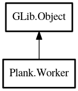

Worker
Object Hierarchy:

Description:
public class Worker : Object
Content:
Static methods:
Methods:
- public void add_task (owned ThreadFunc<void*> func, TaskPriority priority = DEFAULT)
Schedule given function to be run in our ThreadPool The given priority
influences execution-time of the task depending on the currently scheduled amount of tasks.
- public async G add_task_with_result<G> (owned TaskFunc<G> func, TaskPriority priority = DEFAULT) throws Error
Schedule given function to be run in our ThreadPool The given priority
influences execution-time of the task depending on the currently scheduled amount of tasks.
Inherited Members:
All known members inherited from class GLib.Object
- @new
- new_valist
- newv
- add_toggle_ref
- add_weak_pointer
- bind_property
- connect
- constructed
- disconnect
- dispose
- dup_data
- dup_qdata
- freeze_notify
- @get
- get_class
- get_data
- get_property
- get_qdata
- get_type
- notify_property
- @ref
- ref_sink
- replace_data
- replace_qdata
- remove_toggle_ref
- remove_weak_pointer
- @set
- set_data
- set_data_full
- set_property
- set_qdata
- set_qdata_full
- steal_data
- steal_qdata
- thaw_notify
- unref
- watch_closure
- weak_ref
- weak_unref
- notify
- ref_count